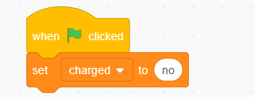
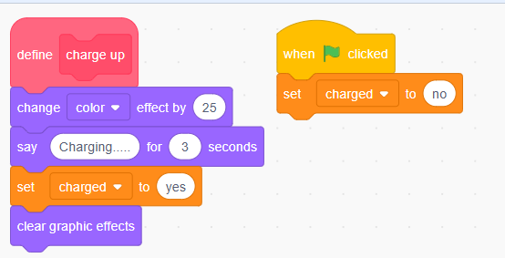

Function
In Scratch, when we create our own block, it's like making a new command.
In programming, this is called a function. A function is a set of instructions that we can use whenever we need it!In Scratch, when we create our own block, it's like making a new command.
Let’s say you are creating a game where the robot needs to charge up its energy before it can attack.
First, we need to create a variable that stores whether the robot is charged or not.
Let’s create a variable named ‘charged’.When the green flag is clicked we will set ‘charged’ to ‘no’(because the robot starts without energy).

Let’s create a block for charging the Robot.
To create a new block you need to:
- Go to ‘My Blocks’
- Click on Make a Block
- Name your block. We will name this block ‘charge up’.
When we create a new block in Scratch, we are teaching Scratch a new command that it didn’t know before.
As soon as we create a new block, you will find a ‘define’ block in the workspace area. Here we add all the steps that this block would perform.
In the ‘define charge up’ block we will add steps to charge the Robot. We are telling what ‘charge up’ means.
We will :
- Change the color effect of the robot.
- Show a ‘Charging’ message for 3 seconds.
- Set the ‘charged’ variable to ‘yes’.
- Clear all effects.

Clears all graphic effects on the sprite.
We have used clear graphic effects to remove the effects since we want the color effect to be there only while it's charging.
Defining a block doesn’t automatically run it. It is just like teaching Scratch something new and it remembers it but it won’t do anything until we use it in the script.
To make the custom block run, we need to drag it from ‘My Blocks’ and place it in our script, just like other Scratch blocks. We can connect it to different events to trigger it at the right time.
Using a block like this is called a function call in programming.
We have taught Scratch what ‘charge up’ means. Now, whenever we want the Robot to charge up, we can just use the ‘charge up’ block available in ‘My Blocks’ and it will automatically run all the commands inside the ‘define charge up’ block. We can use it as many times as we want without rewriting all the steps again
Let’s make the Robot charge up when I press the up arrow key.
Changing color on a collision
Now let’s change the color when one bus touches another.
Bus1:

Bus2: